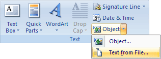

Free
computer Tutorials
|
Free
computer Tutorials
|
|
 home home |
|
|||||
Microsoft Word 2007 to 2010How to Insert a Text FileTo insert a file into your Microsoft Word document, do the following: Click on the Insert tab at the top of Microsoft
Word  When you click on Text from File, you'll see the Insert File dialogue box appear: Navigate to your where you saved your text file to. We kept ours in the Documents folder of Windows 7, and have navigated to there.
Click on the file called Little Thumb to select it. If you can't see this file, click the dropdown list to the right of the File name textbox at the bottom. Set it to Text Files: Once you have selected the Little Thumb text file click the Insert button. The file will be inserted into your new document. You cursor will be flashing at the end of the story, on page seven. To get back to the top, you can hold down the CTRL key on your keyboard. Keep it held down and press the Home key on your keyboard (usually just above the arrow keys on a standard keyboard. On a laptop, the Home key may be found on the top row, to the right). Another quick way to get back to the top of the document is to right click one of the scrolling arrows on the right hand side of Microsoft Word: Select Top from the menu to move the cursor to the start of the document. What we'd like to do to this document is to change the style. At the moment, all the text is set to a font called Courier New, and the font size is 10.5. We'll change the body text to one font, and the heading text to something else. Select just the heading of your story. Use the Font dialogue box to choose a font and font size for your heading. Now select all the text of the story, but not the heading. With the story text selected choose a font and font size again. With a heading font and a different body text font set, we'll move on and have a look at Headers and Footers. <--Back to the Word Contents Page View all our Home Study Computer Courses
|
||||||
|